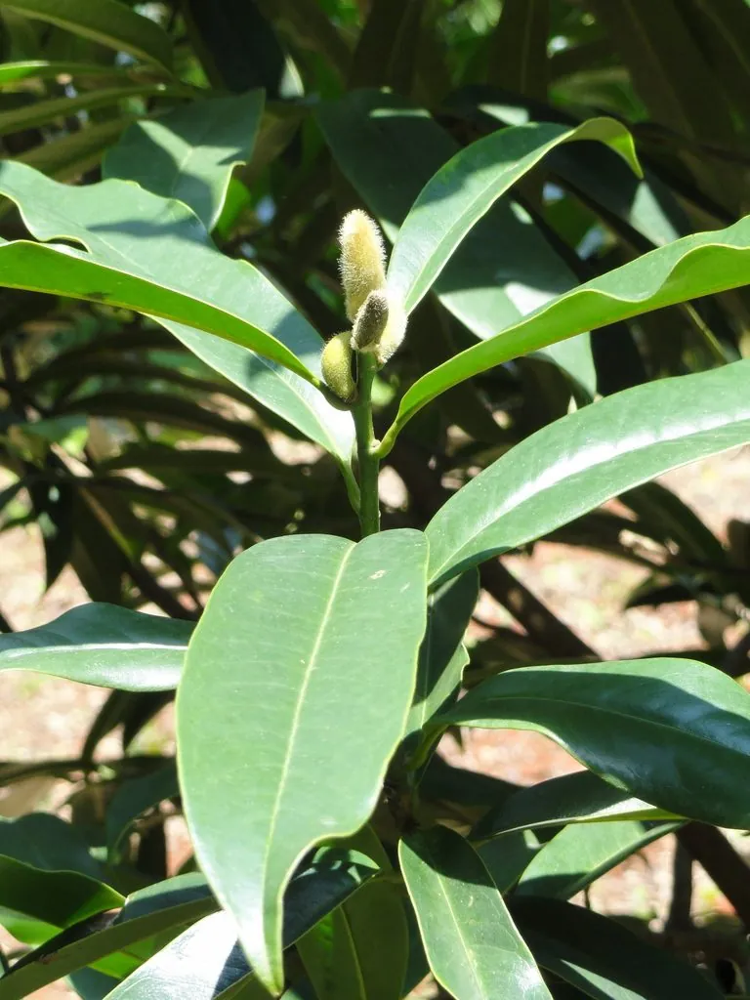

乔木 · 植物界
乐昌含笑 Michelia chapensis

中国南方常绿阔叶林中的高大乔木，春季开淡黄色小花、香气清幽，树形挺拔，是优良的用材与园林树种。
- 分类
- 门被子植物门纲木兰纲目木兰目科木兰科属含笑属
- 栖息环境
- 海拔 500–1500 米的山地常绿阔叶林，喜温暖湿润、半阴
- 地理分布
- 中国广东、广西、湖南、江西、贵州等地，为中国特有树种
- 保护级别
- 暂无评估；中国未列入国家重点保护野生植物名录
物种志
乐昌含笑为常绿乔木，高可达 30 m，树皮灰褐色、平滑；小枝无毛，顶芽狭卵形；叶片倒卵形或长圆状倒卵形，革质，表面深绿光亮，叶背淡绿。花期 3–4 月，花单生于叶腋，花被片 6 枚、淡黄色，芳香清幽；聚合蓇葖果穗状，成熟时开裂，种子红色。乐昌含笑树冠浓密、四季常青，是南方优良的庭园观赏与行道树种。
乐昌含笑是中国特有种，分布于广东、广西、湖南、江西、贵州等地海拔 500–1500 m 的常绿阔叶林中，喜温暖湿润、半阴环境，适宜深厚肥沃、排水良好的酸性土壤。木材结构细、纹理直，可供建筑、家具与胶合板用；花芳香，可提取芳香油；树形优美、枝叶繁茂，是南方城市绿化的优良树种。由于天然林资源减少，各地已加强对乐昌含笑野生种群的保护与人工繁育研究。
形态与习性
- 株高可达 30 m，树干通直
- 花期3–4 月，花淡黄色、芳香
- 果期8–9 月，聚合蓇葖果穗状
- 光照喜半阴，幼树耐阴
- 水分喜湿润，怕积水
- 土壤深厚肥沃的酸性壤土
- 主要用途建筑与家具用材、园林绿化、花提取芳香油
趣味知识
- 乐昌含笑的花淡黄色、香气清幽，花期在早春，是优良的香花树种。
- 乐昌含笑是中国特有树种，模式标本采自广东乐昌，因此得名。
- 乐昌含笑树干通直、树冠浓密，是南方城市绿化的优良常绿乔木。
- 含笑属植物的花常半开半合，像人含笑不语，因此得名“含笑”。